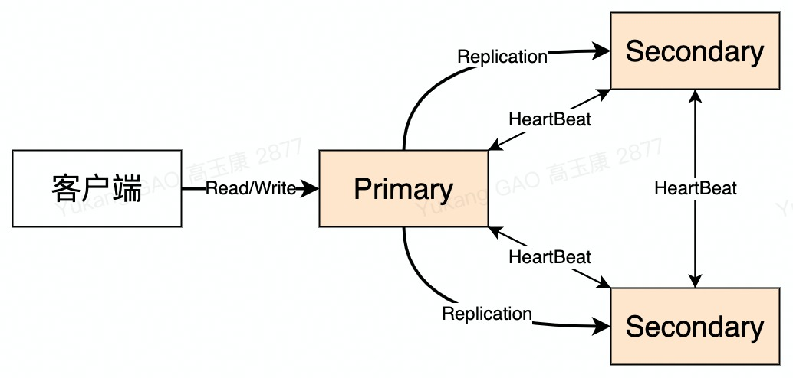
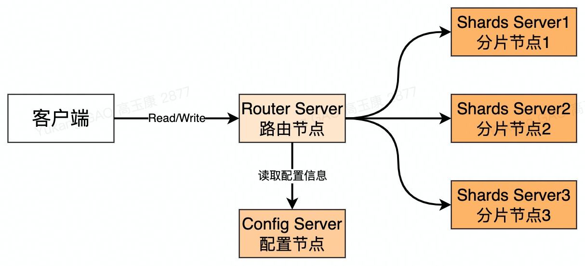

1011、下载地址https://www.mongodb.com/try/download/community 2 https://pan.baidu.com/s/1yjtL-9pzqM3h8pmb8rMfSQ 提取码：53533
42、将压缩包解压即可 tar -zxvf MongoDB-linux-x86_64-4.1.3.tgz5 63、直接启动 ./bin/mongod7 指定配置文件方式的启动 ./bin/mongod -f mongo.conf8 94、图形化工具10 Robot3T291#配置文件 "注意使用到的文件都需要提前创建好"2#基础配置3systemLog4 path/opt/mongo/logs/config.log5 logAppendtrue6 destinationfile7processManagement8 forktrue9 pidFilePath/opt/mongo/data/mongod.pid10net11 port2701712 bindIp0.0.0.013
14#存储引擎配置15storage16 journal17 enabledtrue18 dbPath/opt/mongo/data19 directoryPerDBtrue #每个DB是否需要单独的文件夹20 enginewiredTiger21 wiredTiger22 collectionConfig23 blockCompressorzlib #压缩方式24 indexConfig25 prefixCompressiontrue26 engineConfig27 cacheSizeGB128 directoryForIndexestrue29 journalCompressornone配置
341#各个节点配置相同注意创建文件夹 ./bin/momgod -f mongo.cfg2systemLog3 path/opt/mongo/logs/mongoServer.log4 logAppendtrue5 destinationfile6processManagement7 forktrue8 pidFilePath/opt/mongo/data/mongod.pid9net10 port2701711 bindIp0.0.0.012#security:13 # keyFile: /opt/mongo/data/keyfile/security14 #clusterAuthMode: keyFile15 #authorization: enabled16replication17 replSetNamemyCluster18
19#存储引擎配置20storage21 journal22 enabledtrue23 dbPath/opt/mongo/data24 directoryPerDBtrue #每个DB是否需要单独的文件夹25 enginewiredTiger26 wiredTiger27 collectionConfig28 blockCompressorzlib #压缩方式29 indexConfig30 prefixCompressiontrue31 engineConfig32 cacheSizeGB133 directoryForIndexestrue34 journalCompressornone初始化复制集
291随机进入任一节点2 ./bin/mongo --port 270173
4初始化复制集5 var cfg ={"_id":"myCluster",6 "protocolVersion":1,7 "members":[8 {"_id":1,"host":"192.168.186.10:27017"},9 {"_id":2,"host":"192.168.186.11:27017"}10 ]11 };12 members中可配置参数说明:13 ->id: 标识符ID。14 ->host: 主机。15 ->priority: 默认1，是否有资格变成主节点，取值范围0-1000，0永远不会变成主节点。16 ->hidden: 隐藏，权重必须为0，才可以设置。17 ->votes: 投票，是否为投票节点,0 不投票，1投票。18 ->slaveDelay: 从库的延迟多少秒。19 ->buildIndexes: 主库的索引，从库也创建，_id索引无效。20 21 22初始化23rs.initiate(cfg)24
25重新装载26rs.reconfig(cfg)27 28查看状态29rs.status()动态添加/删除从节点
91设置从节2 ./bin/mongo -p 27017 3 rs.slaveOk()4
5进入primary设置6 增加节点7 rs.add("192.168.186.12:27017");8 删除slave节点9 rs.remove("192.168.186.12:27017");原理

561主从架构2 介绍: master-slave架构中，主节点将操作信息记录在oplog中，从节点读取oplog的操作而达到数据复制。3 缺点: 主从架构中不会自动进行故障转移，因此不推荐使用，在mongo4.0之后就不支持。4
5复制集架构6 介绍: 复制集是至少由2台的"相同数据集"的mongo实例组成的集群。成员有Primary主节点、secondary从节点和投票节点。Primary主节点可以完成读写操作，Secondary节点只支持读操作。7 优点:8 1、高可用: 数据冗余保证数据高可用;有自动failover。9 2、灾难恢复: 出现故障会自动从节点恢复数据。10 3、功能隔离: 可以在从节点上执行读来实现主从分离。11
12复制集同步流程13 介绍: Primary主节点会将所有的写操作记录到oplog文件(local数据库中)，Secondary从节点从oplog中读取并执行命令来保证数据的一致性。oplog是有幂的，更加保证了数据的一致性。14 同步类型: 初始化同步和keep复制同步。15 初始化: 指全量从主节点同步数据，数据量越大同步时间越长。16 keep复制: 从节点之间的实时同步一般是增量同步。17 初始化条件: Secondary第一次加入;Secondary落后的数据量超过了oplog的大小。18
19oplog结构20 {21 "ts": Timestamp(1446011584, 2), 22 "h": NumberLong("1687359108795812092"),23 "v": 2, 24 "op": "i", 25 "n": "", 26 "ns": "test.nosql", 27 "o": { "_id" : ObjectId("563062c0b085733f34ab4129"), "name" : "mongodb","score" : "10"}, 28 "o2": ""29 }30字段说明31 ts: 当前timestamp+计数器，计数器每秒都被重置。32 h: 唯一标识。33 v: oplog版本信息。34 op: 操作类型：i-新增、u-修改、d-删除、c-DDL(createDatabase)。35 n: 空操作，特殊用途。36 ns: 集合名。37 o: 操作内容。38 o2: 更新查询条件,仅update操作包含该字段。39
40心跳机制41 介绍: 每个节点都会向其他节点每2s发送一次ping包，如果其他节点10s内没有响应就证明该节点不能访问，并将信息维护到自己的映射表中，如果主节点发送心跳包有过半的节点都不能响应就会将自己降级为从节点。42
43选举机制44 选举触发时机:45 1、初始化复制集。46 2、Secondary权重比Primary权重高。47 3、Secondary不能得到Primary心跳响应。48 4、Primary发出的心跳包有过半的节点没有响应会自动降级。49 选举过程: Primary选举是一个二阶段+多数派协议。50 1、第一阶段，检测自己是否有被选举的资格，符合条件会向其他节点发送FreshnessCheck来检查自己是否有资格被选举。51 2、第二阶段，校验通过之后，向仲裁节点发送Elect请求，仲其他点收到请求会进行各种检查，检查通过会给当前节点投1票。52 3、多数派协议，超过半数的节点投给自己，自身会变成Primary。低于半数并且有相同票数的节点，会进行随机sleep0～1s之后再次选举。53
54仲裁节点55 介绍: 一种特殊的节点，本身不存储任何数据，主要功能就是参与选举(普通的节点也可以投票)。主要针对偶数个节点的复制集可以添加一个仲裁节点来辅助选举。56 添加Demo: rs.addArb("192.168.186.13:27017");规划
371#192.168.186.10 configSrv|shardSrv1|shardSrv22#192.168.186.11 configSrv|shardSrv1|shardSrv23#192.168.186.12 configSrv|shardSrv1|shardSrv24#192.1681.86.13 routings5
6#配置区别7#configSrv8net9 port2701910sharding11 clusterRoleconfigsvr12replication13 replSetNameconfigSet14
15#shardSrv1 同一个机器上日志路径和文件路径也需要修改16net17 port2701818sharding19 clusterRoleshardsvr20replication21 replSetNameshardSet122
23#shardSrv2 同一个机器上日志路径和文件路径也需要修改24net25 port2701626sharding27 clusterRoleshardsvr28replication29 replSetNameshardSet230
31#routings32net33 port2701734sharding35 #此项只针对mongos。指定config server的replica set名字，hostname和端口36 configDBconfigSet/192.168.186.1027019,192.168.186.1127019,192.168.186.122701937 #注意mognos不需要存储引擎的配置通用部分配置
411#各个节点配置相同注意创建文件夹 ./bin/momgod -f mongo.cfg2systemLog3 path/opt/mongo/logs/mongoServer.log4 logAppendtrue5 destinationfile6processManagement7 forktrue8 pidFilePath/opt/mongo/data/mongod.pid9net10 port*11 bindIp0.0.0.012#security:13 # keyFile: /opt/mongo/data/keyfile/security14 #clusterAuthMode: keyFile15 #authorization: enabled16sharding17 18 #角色configsvr 27019端口启动, shardsvr 27018端口启动19 clusterRole* 20 21 #此项只针对mongos Demo: configSet/192.168.186.10:27019,192.168.186.11:27019,192.168.186.12:2701922 configDB*23replication24 replSetName*25
26#存储引擎配置[只针对配置节点和shard节点]27storage28 journal29 enabledtrue30 dbPath/opt/mongo/data31 directoryPerDBtrue32 enginewiredTiger33 wiredTiger34 collectionConfig35 blockCompressorzlib36 indexConfig37 prefixCompressiontrue38 engineConfig39 cacheSizeGB140 directoryForIndexestrue41 journalCompressornone初始化
521#进入任意机器 ./bin/mongo2
3# 启动配置集群4var cfg1 ={"_id":"configSet",5 "protocolVersion" : 1,6 "members":[7 {"_id":1,"host":"192.168.186.10:27019"},8 {"_id":2,"host":"192.168.186.11:27019"},9 {"_id":3,"host":"192.168.186.12:27019"}10 ]11};12
13rs.initiate(cfg1)14rs.status()15
16# 启动分片节点17 var cfg2 ={"_id":"shardSet1",18 "protocolVersion" : 1,19 "members":[20 {"_id":1,"host":"192.168.186.10:27018"},21 {"_id":2,"host":"192.168.186.11:27018"},22 {"_id":3,"host":"192.168.186.12:27018"}23 ]24};25rs.initiate(cfg2)26rs.status()27 28var cfg3 ={"_id":"shardSet2",29 "protocolVersion" : 1,30 "members":[31 {"_id":1,"host":"192.168.186.10:27016"},32 {"_id":2,"host":"192.168.186.11:27016"},33 {"_id":3,"host":"192.168.186.12:27016"}34 ]35};36rs.initiate(cfg3)37 38# 配置路由节点39 #启动40 ./bin/mongos -f route.cfg41 #路由添加分片节点 shard1 shard2代表的是分片集合的名字42 sh.status()43 44 #添加shard节点45 sh.addShard("shardSet1/192.168.186.10:27018,192.168.186.11:27018,192.168.186.12:27018");46 sh.addShard("shardSet2/192.168.186.10:27016,192.168.186.11:27016,192.168.186.12:27016");47 48 #指定集合的分片键49 sh.enableSharding("test", "orderId")50 51 #为指定集合开启分片功能 库名.集合名,分片键:分片算法52 sh.shardCollection("test.orders",{"orderId":"hashed"})原理

441使用经验2 对于后续会扩容的分片集群，建议最开始分片数多点后续主要扩机器配置？还是最开始机器配置好点后续主要扩分片?3 初始分片多点,主要原因: 4 1、纵向扩容相对于横向扩容肯定是更容易的，而且很有可能避免数据的搬迁。如果后续扩分片的话数据搬迁不可避免。5 2、分片键合理的话，数据写入被均衡到更多的分片上(机器上),集群整体读写性能更优。6 3、单个分片内的数据少，遇到故障时的回复时间也相对短一些，备份/回档等维护操作也能更充分的利用分片间的并发。7 8介绍9 分片机制: Mongo将数据库数据分散存储到不同的服务器上，来缓解高并发访问，均衡负载。10 分片: 一份数据被分开保存在N台机器上，N个机器上的数据组合起来是一份数据。11 副本集: 同一份数据被保存在N台机器上，每台机器上都有一份数据。12 13组成14 Router Server: 路由节点(mongos)，作为请求的入口，负责把请求转发到对应的Shards Server上。15 Config Server: 配置节点(config)，存储所有数据库元信息（路由、分片）的配置。16 Shards Server: 分片节点(shard)，可以是一个mongod，也可以是个副本集(replica set)。17 18分片优点19 1、读写: 读写水平扩展，读写负载到不同的分片节点上；读写针对性陆游，对于包含分片键的查询可以直接路由到分片节点上提高了读写效率。20 2、存储能力: 将数据分配到整个集群存储，提高了存储能力。21 3、高可用: Config Server和Shards Server作为副本集的部署提供了更高的可用性。22
23分片注意因素24 1、维护比较复杂。25 2、一旦分片之后，数据是不能进行恢复的。(操作是不可逆的)26 3、为了保证读写效率，分片键慎重选择。27 4、分片后一些功能可能会受限制。(唯一索引等等)28 5、Mongo4.4及之后才支持多字段作为分片键,之前版本都仅支持单字段用做分片键。29 6、如果查询操作不包括分片键或复合分片键的前缀，mongos将执行广播操作，查询shard集群中的所有shard。30
31chunk(块)32 定义: 文档的集合，mongo将集合切割成很小的chunk来存储在不同的分片上。(可以理解成Redis的hash slot)33 作用: chunk是Mongo在多个shard集群中迁移数据的最小单元；chunk范围大小是可以调整的，但是不建议调整避免chuk过多；chunk大小过大的时候会进行主动分割。34 35片键(shard key)36 定义: mongo使用片键在分片节点之间分布文档,片键由文档中的一个字段或者多字段组成。37 选择: 建议使用文档主键_id的hash值作为片键，这样子可以将文档均匀分配到分片节点上。38 片键索引: 就是对分片的键创建索引。39分片方式40 范围分片(Range based sharding): 根据片键值所处as的范围将数据存储到不同的分片上；实际上数据在不同的chunk上，chunk位置信息和数据范围存储在config server中。适用于范围查询。数据存储不均匀。41 Hash分片(hash based sharding):对片键值进行hash然后决定其存放于哪个分片又称为随机分片。适用于单值查询。数据存储均匀。42
43参考文档44 https://blog.csdn.net/mijichui2153/article/details/114779196创建用户与角色
191use admin;2
3#创建用户和角色4db.createUser(5 {6 user:"root",7 pwd:"root",8 roles:[{role:"root",db:"admin"}]9 }10);11
12#修改密码13db.changeUserPassword('root','rootNew');14
15#添加角色16db.grantRolesToUser('用户名', [{ role:'角色名',db:'数据库名'}])17 18#以验证方式启动 19./bin/mongod -f conf/mongo.conf --auth 用户角色
211内置角色2 read: 允许用户读取指定数据库3 readWrite: 允许用户读写指定数据库4 dbAdmin: 允许用户在指定数据库中执行管理函数，如索引创建、删除，查看统计或访问system.profile5 userAdmin: 允许用户向system.users集合写入，可以找指定数据库里创建、删除和管理用户6 clusterAdmin: 只在admin数据库中可用，赋予用户所有分片和复制集相关函数的管理权限7 readAnyDatabase: 只在admin数据库中可用，赋予用户所有数据库的读权限8 readWriteAnyDatabase: 只在admin数据库中可用，赋予用户所有数据库的读写权限9 userAdminAnyDatabase: 只在admin数据库中可用，赋予用户所有数据库的userAdmin权限10 dbAdminAnyDatabase: 只在admin数据库中可用，赋予用户所有数据库的dbAdmin权限11 root: 只在admin数据库中可用。超级账号，超级权限12 dbOwner: 库拥有者权限，即readWrite、dbAdmin、userAdmin角色的合体13
14各个角色使用场景 15 数据库用户角色：read、readWrite16 数据库管理角色：dbAdmin、dbOwner、userAdmin17 集群管理角色：clusterAdmin、clusterManager、clusterMonitor、hostManager18 备份恢复角色：backup、restore；19 所有数据库角色：readAnyDatabase、readWriteAnyDatabase、userAdminAnyDatabase、 dbAdminAnyDatabase20 超级用户角色：root21 这里还有几个角色间接或直接提供了系统超级用户的访问（dbOwner 、userAdmin、userAdminAnyDatabase） 密钥
121#生成密钥2mkdir -p data/mongodb/3openssl rand -base64 756 > data/mongodb/testKeyFile.file4chmod 600 data/mongodb/testKeyFile.file5 6#配置7auth=true8keyFile=data/mongodb/testKeyFile.file9 10#springboot项目11spring.data.mongodb.username=账号12spring.data.mongodb.password=密码